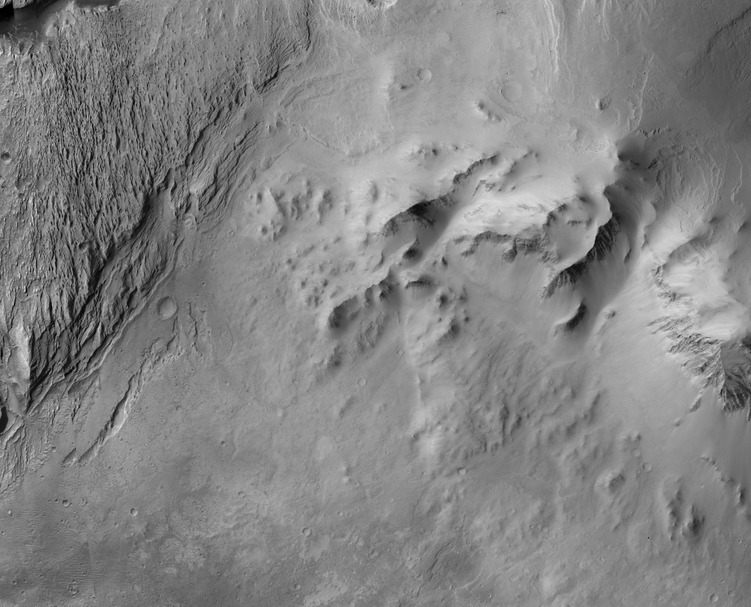

Map

Layer not available yet
Local orbital image. Gale mosaic credit is in Sources.
Conceptual route for a hackathon prototype—not a verified safe route.

Layer not available yet
Local orbital image. Gale mosaic credit is in Sources.
Photo not available yet